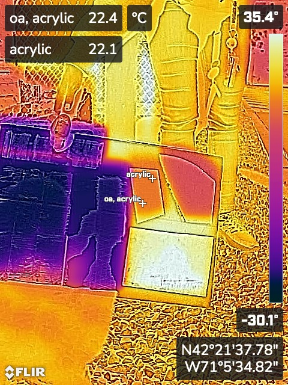

## Week 5:
### Monday:
We went over the basics of Fusion360 and how to use 2D sketches to prototype a design.
In addition, we looked at last year’s prototype and started discussing how our tracking/motor
system would be different.
On Tuesday, I assembled the framework of our 3-D printed test tracking device.
<img src="./framework.jpg" alt="the tracker I built" width="500"/>
### Wednesday:
Following up on my observations on Week 4 Wednesday, we decided to test various materials and see
which ones reflected the most heat. We had 6 different types of materials, all mounted on a foam
board:
* Acrylic: the acrylic mirror we used in our first prototype mirror
* Yellow: part of the Yellow Solar Cooker that was tested at the beginning of the year
* Paper: a piece of paper coded in reflective material
* Smooth: a piece of reflective tape that is smoother/thinner than the other one
* Textured or Text: a reflective tape that had a diagonal, criss-crossing pattern on it and was
thicker than the smooth tape
* Metal: part of a reflective metal tube that was cut off and smoothed out a bit
I used the FLIR camera to get data. We tested various ideas.
Here is some of the shorthand I used when annotating the pictures:
* c = coldest spot on the reflective material
* w = warmest spot on the reflective material
* oa = on angle, ie. as close to the shadow of the phone as possible.
* ca = as close to on angle as possible, but the shadow of the phone was not that close to the
reflective material
* s = in shadow
At first we tried to test which one would reflect the most heat by putting the phone as directly in
line with the glare of the sun as possible. However, getting things to line up was very difficult,
so instead we switched to seeing which mirror would most accurately reflect the temperature of the
sky since the sky had a much larger surface area. The sky had a temperature of around -25 to -30
degrees Celsius.
First, here are some useful temperatures for comparison:
Next, here's the pictures in the sun. You can see that I never got close to measuring the reflection
of the sun.

Here is some more pictures, taken without trying to reflect the sun.
<img src="./metal.JPG" alt="metal" width="400"/>
I also noticed that the measured temperatures were lower when I measured for farther away. This
means for future tests, I will have to be careful that I take measurements from the same distance.
<img src="./all_distanceJPG.JPG" alt="all 6" width="400"/>
We made the same observations for the angle the picture was taken at, with the same considerations
that need to be made in the future.
We hypothesized that the acrylic mirror was doing so poorly because it mostly reflected visible light
and absorbed infrared (which is a large part of the spectrum of sunlight). The smooth and Textured tape
seemed to do the opposite, since they were not visibly reflective but did have a colder temperature.
To test this, we marked the acrylic, metal, and foam with a black Sharpie to block visible light.
This had an affect on the foam and the metal. but not a noticable affect on the acrylic, which seems
to confirm our hypothesis.